Ren in the apartment, drawn into the art kit's own camera (concept composition; PROPOSED, not game art)

ren-couch-wide: Ren sitting on the couch in the living room, the physical rubber duck on the coffee tableren-couch-medium: Close view of Ren sitting on the couch

ren-loveseat-wide: Ren sitting in a small sofa to the left of the living room, the couch empty

ren-kitchen-bar-wide: Ren standing behind the kitchen bar, the physical rubber duck on the bar top

ren-kitchen-bar-medium: Close view of Ren behind the kitchen barren-floor-game-night: Ren on the floor at a board game night, couch gone, duck on a magazine facing the board